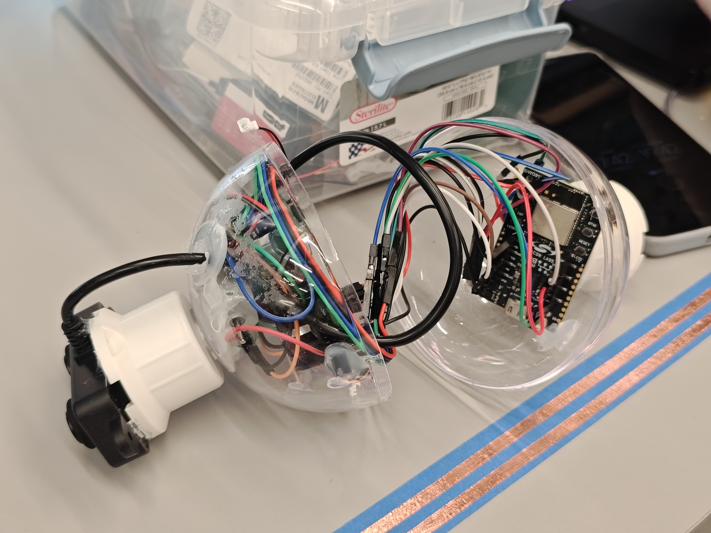
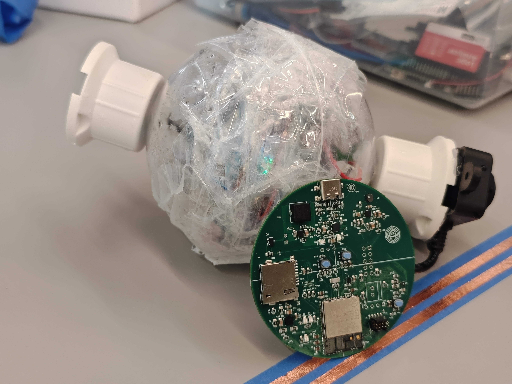

Hardware Design
Detailed hardware specifications, sensor integration, and pin-level configuration for the CyberRod IoT smart fishing rod monitoring system.
Core Hardware Components
The CyberRod system is built around the Silicon Labs Si917 wireless microcontroller with integrated sensors for environmental monitoring and proximity detection.
Silicon Labs Si917 MCU
SIWG917Y111MGABAARM Cortex-M4F processor with hardware floating-point unit and built-in Wi-Fi 2.4 GHz 802.11 b/g/n radio. Deployed on the BRD2708A development board with full GPIO breakout.
- Core: ARM Cortex-M4F @ 80 MHz
- Wireless: Wi-Fi 2.4 GHz 802.11 b/g/n
- Dev Board: BRD2708A
- SDK: Simplicity SDK 2025.6.3
- Wireless SDK: WiseConnect 3 v3.5.2
- Interfaces: I2C, UART, SPI, GPIO, ADC
SHT4x Temp & Humidity
Sensirion SHT40High-accuracy digital temperature and humidity sensor connected via I2C. Operates in high repeatability mode with CRC-8 data integrity validation for reliable environmental readings.
- Interface: I2C at address 0x70
- Bus: I2C0 (SCL GPIO_7, SDA GPIO_6)
- Mode: High repeatability + CRC-8
- Temp Range: -45°C to +130°C
- Humidity: 0–100% RH
- Conversion: T = -45 + 175 × (raw/65536)
Ultrasonic Distance Sensor
UART InterfacePrecision ultrasonic range finder connected via UART for proximity detection and distance measurement. Used to detect fish proximity and rod tip deflection events with configurable distance thresholds.
- Interface: UART1 (TX GPIO_30, RX GPIO_29)
- Baud Rate: 9600, 8N1
- Frame: 4 bytes (0xFF header + 2B distance + checksum)
- Encoding: Big-endian, millimeter resolution
- Very Near: < 100 mm
- Near: < 300 mm
Pin Configuration & Mapping
Complete GPIO and peripheral mapping for the Si917 (BRD2708A) development board. All pin assignments follow the WiseConnect 3 SDK configuration with high-performance (HP) and ultra-low-power (ULP) port designations.
| Peripheral | Function | Pin | Port | Location | Connected Device |
|---|---|---|---|---|---|
UART1 TX |
Transmit | GPIO_30 | HP (PORT 1) | LOC 1 | Ultrasonic Distance Sensor |
UART1 RX |
Receive | GPIO_29 | HP (PORT 1) | LOC 6 | Ultrasonic Distance Sensor |
I2C0 SCL |
Clock | GPIO_7 | HP (PORT 0) | LOC 0 | SHT4x Temp & Humidity Sensor |
I2C0 SDA |
Data | GPIO_6 | HP (PORT 0) | LOC 3 | SHT4x Temp & Humidity Sensor |
ULP_UART TX |
Debug Transmit | ULP_GPIO_11 / GPIO_75 | ULP PORT | — | Debug Console (USB-UART) |
ULP_UART RX |
Debug Receive | ULP_GPIO_9 / GPIO_73 | ULP PORT | — | Debug Console (USB-UART) |
I2C Bus Configuration
The SHT4x temperature and humidity sensor communicates over I2C0 at the 7-bit slave address 0x70. The firmware uses high repeatability measurement mode (command 0xFD) which returns 6 bytes: 2 bytes temperature raw, 1 byte CRC, 2 bytes humidity raw, 1 byte CRC. Conversion formulas are applied after CRC-8 validation passes.
UART Frame Protocol
The ultrasonic sensor transmits distance data over UART1 at 9600 baud (8 data bits, no parity, 1 stop bit). Each frame is exactly 4 bytes: a fixed header byte 0xFF, followed by 2 bytes of distance in big-endian format (millimeter resolution), and a trailing checksum byte for integrity verification.
Bill of Materials
Complete list of hardware components used in the CyberRod IoT smart fishing rod monitoring system.
| # | Component | Part Number | Interface | Quantity | Description |
|---|---|---|---|---|---|
| 1 | Wireless MCU | SIWG917Y111MGABA | — | 1 | Silicon Labs Si917, ARM Cortex-M4F with integrated Wi-Fi 802.11 b/g/n |
| 2 | Development Board | BRD2708A | — | 1 | Si917 Wireless Starter Kit main board with GPIO breakout and onboard debugger |
| 3 | Temperature & Humidity Sensor | Sensirion SHT40-AD1B | I2C (0x70) | 1 | Digital temp/humidity sensor, high repeatability mode, CRC-8 validated |
| 4 | Ultrasonic Distance Sensor | Generic UART Ultrasonic | UART1 (9600 8N1) | 1 | Proximity sensor with 4-byte serial frame protocol, mm resolution |
| 5 | USB Debug Cable | Micro-USB | USB | 1 | Power supply and debug console connection via onboard EFM32 debugger |
| 6 | Breadboard / Jumper Wires | — | — | 1 set | Prototyping platform and male-to-female jumper wires for sensor connections |
Hardware Assembly
Physical setup of the CyberRod IoT monitoring system showing sensor integration and breadboard wiring.

Si917 BRD2708A development board with I2C and UART sensor connections

SHT4x temperature sensor and ultrasonic distance sensor wiring detail